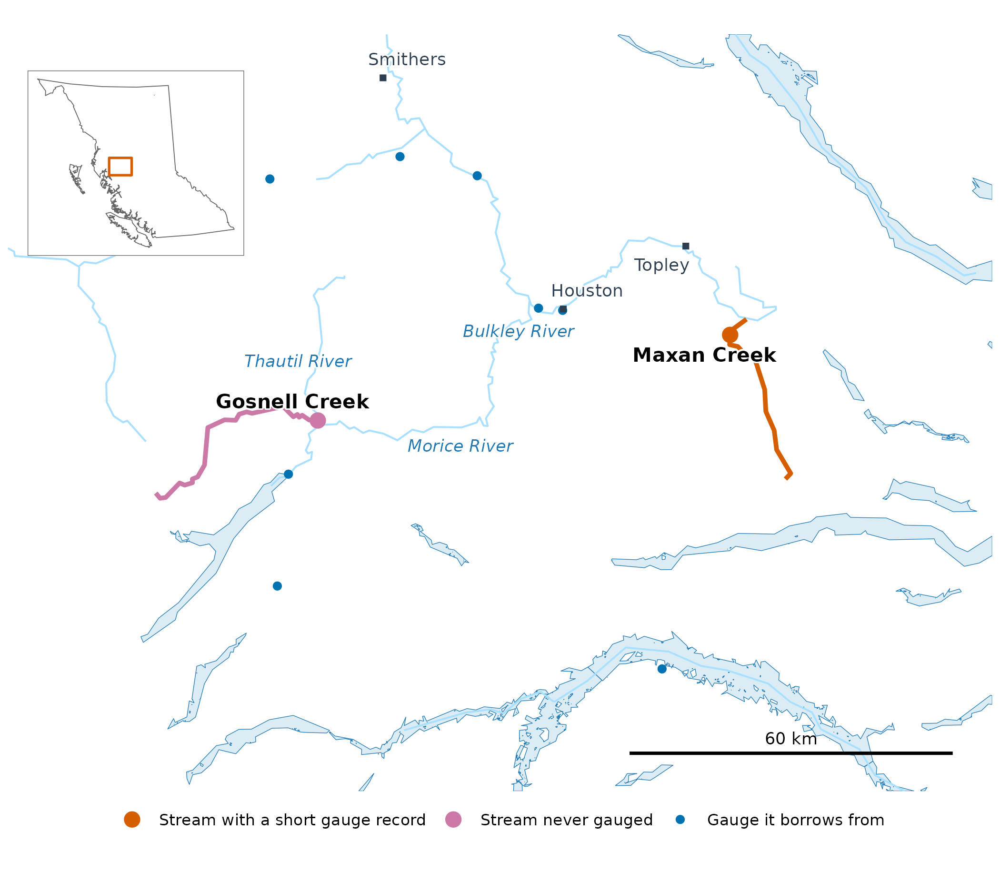
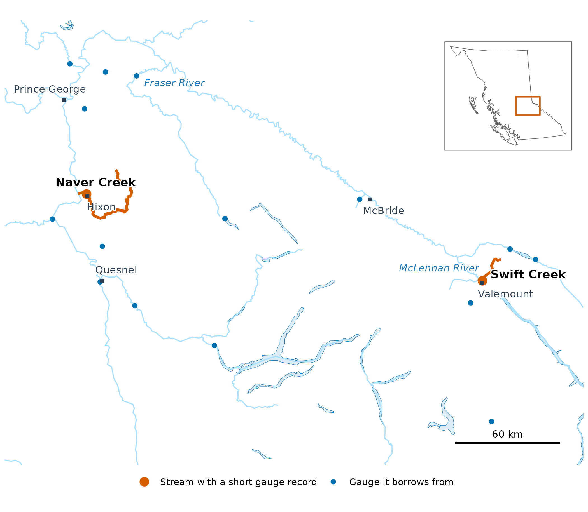
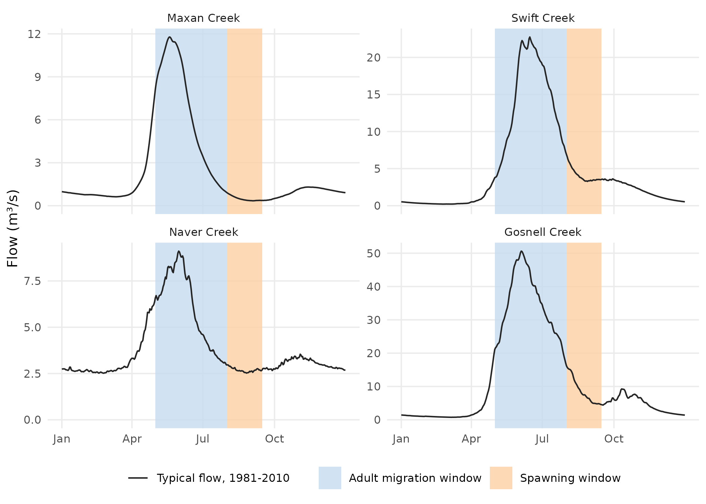
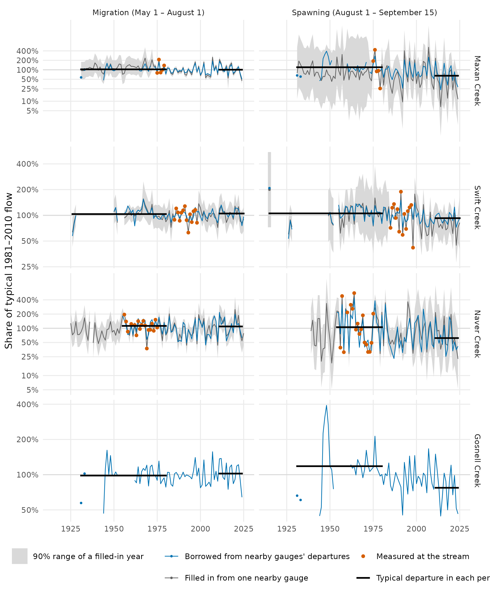
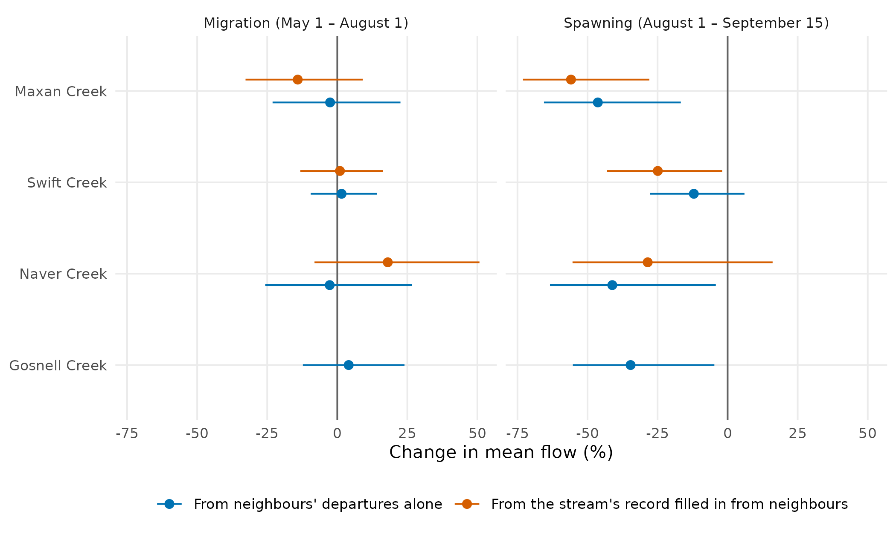

How Stream Flow Has Changed Where Gauges Are Few
Source:vignettes/articles/flow-change-sparse-gauges.Rmd
flow-change-sparse-gauges.RmdMany streams that matter to salmon were gauged for only a few
summers, or never. This article uses the R package wet
to ask how their summer flow has changed since before 1981, at four
streams in northern British Columbia that Chinook salmon use: Maxan
Creek, with five full summers on record; Swift Creek and Naver Creek,
with 14 and 18; and Gosnell Creek, never gauged. Each is run the same
way, with the method fixed before any result, and each is scored on how
well the method predicts gauges it was not given.
The answer. In the salmon spawning window, a stream’s mean flow in a typical year since 2011 was lower than before 1981 at all four streams, by 12% to 46% from nearby gauges’ departures; at Maxan, Naver and Gosnell creeks that route’s 90% range stays below no change. In the migration window no stream’s mean flow shows a clear change. Borrowing departures, the one route every stream has, scores worse in the spawning window than in the migration window at all four under these windows.
Where are the four streams?
The four streams are in northern British Columbia, two in the Skeena system and two in the Fraser. Maxan Creek flows into the upper Bulkley River near Topley, south-east of Smithers, and Gosnell Creek into the Thautil River just above the Morice River, south-west of Houston. Naver Creek flows into the Fraser River near Hixon, south of Prince George, and Swift Creek into the McLennan River, a Fraser tributary, at Valemount. Each borrows its numbers from gauges inside a box of the same size around it.

Maxan and Gosnell creeks in the Skeena system, with the gauges each borrows from. The inset locates the map in British Columbia.

Swift and Naver creeks in the Fraser system, with the gauges each borrows from. The inset locates the map in British Columbia.
Fisheries and Oceans Canada’s spawner surveys find Chinook in Swift Creek in most years since 1970, and the provincial records place a major spawning site within five kilometres of its mouth; they find Chinook in Naver Creek in most years since the mid-1980s. Gosnell Creek’s record is thinner: one survey that found adults, in 2001, and three provincial records of fish seen. The gauged streams’ records sit in different places: Swift Creek’s 14 full summers fall between 1985 and 1998, inside the 1981–2010 baseline, while Naver Creek’s 18 fall between 1956 and 1975, before it, as do Maxan Creek’s five.
What is a window?
A window is a stretch of the year when salmon use a stream for one thing. In the upper Bulkley River, the early run of Chinook passes Moricetown Canyon before about July 30, and Chinook spawn in August and September (Gottesfeld and Rabnett 2007, p. 355). This article uses the windows New Graph’s species-timing table sets for the Bulkley from that report, at all four streams: adult migration from May 1 to August 1, and spawning from August 1 to September 15. A stream’s flow in a window is its mean over those days. At every stream, flow peaks inside the migration window, as snow melts, and is low in the spawning window, under a third of its peak.

Each stream’s typical year (1981–2010), with the two windows shaded: wet’s published daily flow at the gauge, or at Gosnell Creek’s mouth.
How has flow changed?
Two routes fill in the years a stream was not measured. Where a stream has a record, each missing year comes from one nearby gauge, through a fit between the two streams’ flows over the years both were measured. Every stream, gauged or not, can also borrow nearby gauges’ departures from their own typical flow, year by year.

Each window’s mean flow, year by year, as a share of its 1981–2010 typical flow (log scale). Large orange points are measured summers; the grey line fills the other years from one nearby gauge, with its 90% range; the blue line is borrowed from nearby gauges’ year-to-year departures. A small point is a year with no neighbouring year on its line. Black lines are the borrowed route’s typical departure before 1981 and since 2011.
The spawning-window drop is largest at Maxan and Naver creeks and smallest at Swift Creek, and filling in each gauged stream’s own record gives drops in the same direction (25%–56%).

Change in each window’s mean flow, from the years before 1981 to the years since 2011 (to 2024, or 2025 where recorded), with its 90% range, by each route the legend names.
Gosnell Creek also has Chinook windows of its own. Morice Chinook spawn from the first week of September to the first week of October (Bustard and Schell 2002, p. 27), so the Morice’s spawning window, September 1 to October 7, falls a month later than the Bulkley’s. Under these windows Gosnell Creek’s spawning-window drop is smaller, 23%, and its range reaches no change.
How well does the method score?
| Stream | Filled-in record | Gauges tested | Borrowed, migration | Borrowed, spawning | Gauges scored |
|---|---|---|---|---|---|
| Maxan Creek | 0.50 | 21 | 0.63 | 0.49 | 31 |
| Swift Creek | 0.14 | 11 | 0.51 | 0.43 | 13 |
| Naver Creek | 0.63 | 17 | 0.60 | 0.42 | 24 |
| Gosnell Creek | 0.48 | 18 | 0.65 | 0.45 | 30 |
Both routes are scored by hiding a gauge’s own record and predicting it from its neighbours. A score of 0.5 was set as the method’s bar before any stream was run. The borrowed departures clear it in the migration window in every box, and under these spawning windows fall below it in every box, 0.42–0.49; their ranges in the change figure carry that weaker score. Filling in a record scores about the same in the Bulkley, Cottonwood and Morice boxes, and poorly in the upper Fraser, where only 11 gauges have records long enough to test it; there, Swift Creek’s change from its filled-in record is the less certain of its two routes.
Does snow explain it?
The migration-window departures borrowed for each stream follow the winter’s snow: in years with more peak snow over its catchment they are higher, at all four with a 90% range above zero, and peak snow alone accounts for 41–51% of their year-to-year spread. In the spawning window it accounts for at most 16%, and the melt date for at most 23%.
Where could it be wrong?
-
Gosnell Creek’s flow is never measured. Its
departures are tested only at the gauges around it, and its typical flow
is
wet’s published flow for the stream. At 29 gauges in its box with ten or more years of the 1981–2010 baseline, that published spawning-window flow runs a median 21% above measured, and about 60% or more above at a quarter of them. - The windows are the Bulkley’s at all four streams. Only the Morice has its own cited windows; Swift and Naver creeks have none yet.
- Each filled-in year rests on one neighbouring gauge, and the earliest years on whichever single gauge reaches back that far.
Software and citation
The flows in this article are from HYDAT release 20260717; Gosnell
Creek’s typical flow and the hydrographs are wet‘s
published daily flow (for these four streams, routed PCIC’s); the
streams, lakes and catchments are the Freshwater Atlas’s, through
fwapg; place names are BC Geographic Names’. The data were
bundled at wet commit 964f70b. How each stream was chosen,
and how the method is run and scored, is set out in wet’s
research notes.
-
wet0.4.31, doi:10.5281/zenodo.23305781. Irvine A (2026). wet: Stream Flow and Water Temperature for the BC Freshwater Atlas. New Graph Environment Ltd. doi:10.5281/zenodo.23305781 https://doi.org/10.5281/zenodo.23305781. Version 0.4.31, https://github.com/NewGraphEnvironment/wet. -
cd0.6.13, doi:10.5281/zenodo.23264994, commit86989e3. Irvine A (2026). cd: How far any BC watershed’s climate has shifted from your chosen baseline. New Graph Environment Ltd. doi:10.5281/zenodo.23264994 https://doi.org/10.5281/zenodo.23264994. Version 0.6.13, https://github.com/NewGraphEnvironment/cd. -
ggplot24.0.3. Wickham H (2016). ggplot2: Elegant Graphics for Data Analysis. Springer-Verlag New York. ISBN 978-3-319-24277-4. https://ggplot2.tidyverse.org. -
gq0.16.1, doi:10.5281/zenodo.23524719, commitaa082d0. Irvine A (2026). gq: Cartographic Style Management Across Rendering Targets. New Graph Environment Ltd. doi:10.5281/zenodo.23524719 https://doi.org/10.5281/zenodo.23524719. Version 0.16.1, https://github.com/NewGraphEnvironment/gq. -
sf1.1-3, doi:10.1201/9780429459016. Pebesma E, Bivand R (2023). Spatial Data Science: With applications in R. Chapman and Hall/CRC. doi:10.1201/9780429459016 https://doi.org/10.1201/9780429459016. https://r-spatial.org/book/.
Cite wet by the DOI above, which resolves to its latest
release.
Data
- Daily flow: the Water Survey of Canada’s HYDAT, release 20260717.
- Typical flow at each stream (the hydrographs, and Gosnell Creek’s
normal): routed flow from the Pacific Climate Impacts Consortium,
University of Victoria (hydromosaic: VIC-GL
hydrologic model output routed with Raven, PNWNAmet forcing), placed on
the Freshwater Atlas by New Graph’s fork of
fwapg(Norris, S. and Irvine, A. (2026), fwapg, New Graph Environment’s fork, https://github.com/NewGraphEnvironment/fwapg/tree/newgraph) and published bywet(build 0f4f8ca). - Spawner surveys: Fisheries and Oceans Canada’s New Salmon Escapement Database System (NuSEDS), release of 1 June 2026, https://open.canada.ca/data/en/dataset/c48669a3-045b-400d-b730-48aafe8c5ee6.
- Fish observations: Province of British Columbia, Known BC Fish Observations and BC Fish Distributions.
- Snow: ERA5-Land (Muñoz-Sabater and others
2021), summarised per year by
cd. - Streams, lakes and catchments: the Freshwater Atlas Stream Network (Province of British Columbia, 2021, https://catalogue.data.gov.bc.ca/dataset/freshwater-atlas-stream-network), held in a database by Norris, S. (2024), fwapg, https://github.com/smnorris/fwapg.
- Place names: BC Geographic Names.
References
- Bustard, D. and Schell, C. (2002). Conserving Morice Watershed Fish Populations and Their Habitat. Stage II Biophysical Profile, Watershed-Based Fish Sustainability Planning. David Bustard and Associates Ltd., for the Community Futures Development Corporation of Nadina. https://waves-vagues.dfo-mpo.gc.ca/Library/315091.pdf
- Gottesfeld, A.S. and Rabnett, K.A. (2007). Skeena Fish Populations and Their Habitat. Skeena Fisheries Commission.
- Muñoz-Sabater, J. and others (2021). ERA5-Land: a state-of-the-art global reanalysis dataset for land applications. Earth System Science Data 13, 4349–4383. doi:10.5194/essd-13-4349-2021